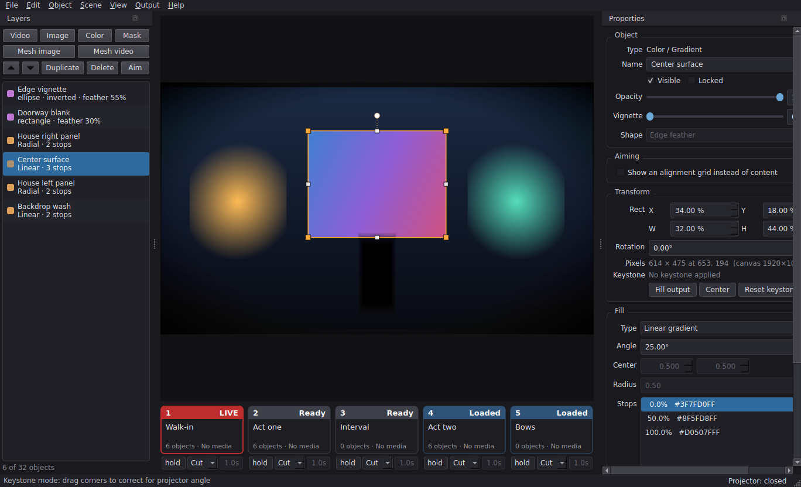
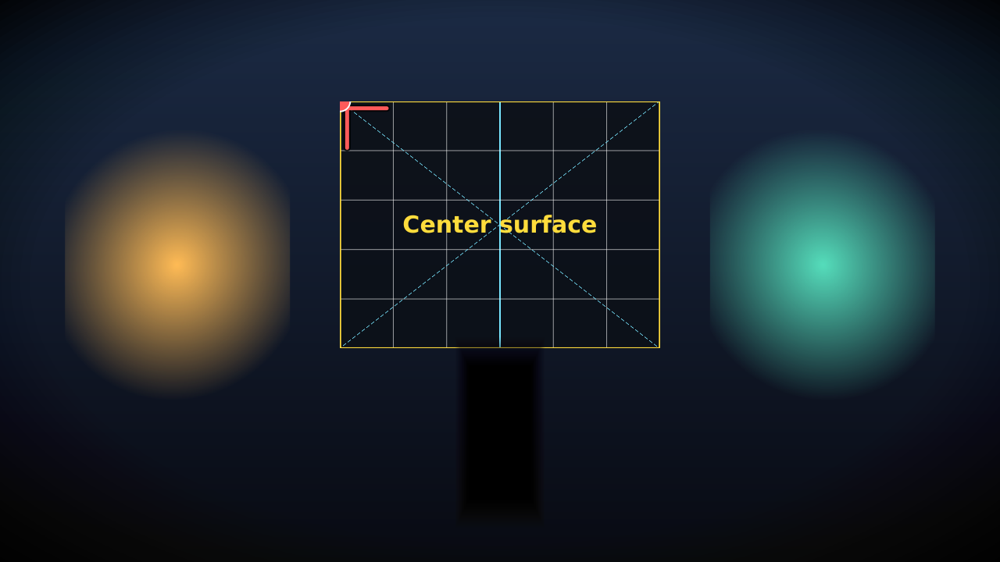
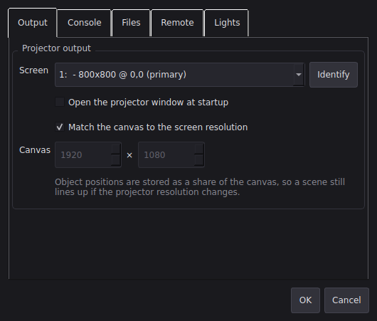
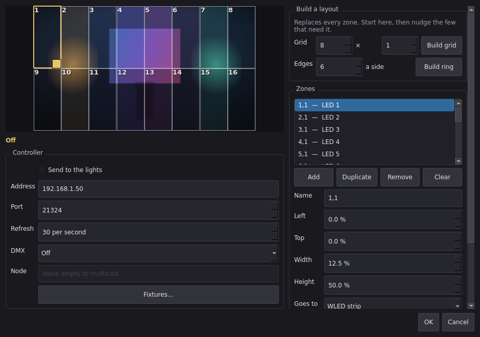
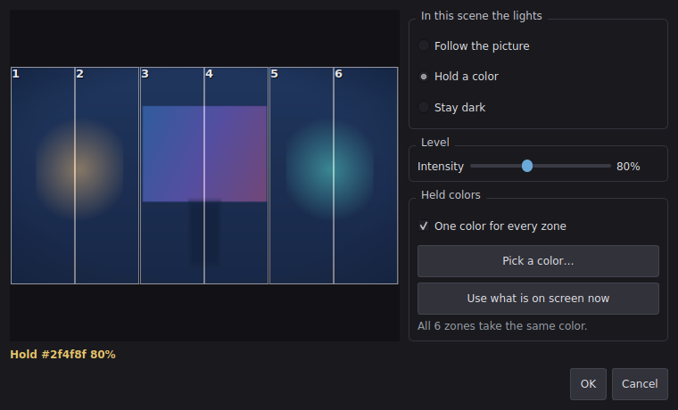
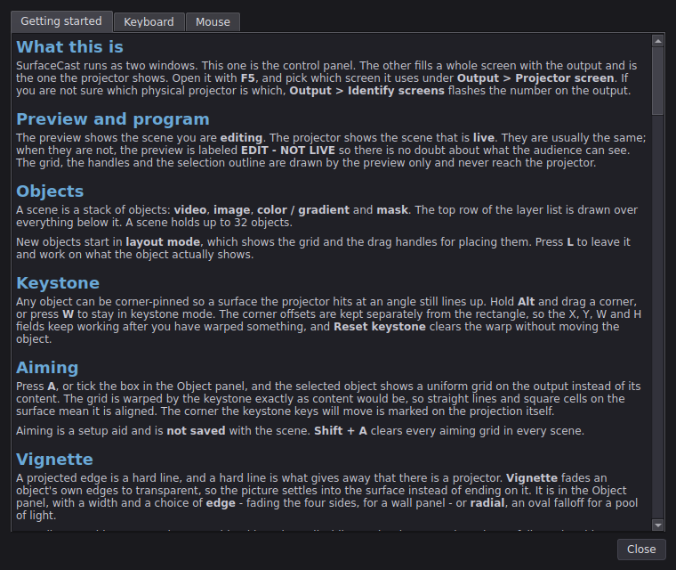

SurfaceCast user guide

First run: from installed to a picture on the wall
If you have just installed SurfaceCast and a projector is plugged in, this is the shortest path to something on the surface. Ten minutes, and nothing here has to be undone later.
1. Tell it which screen the projector is. Open Output > Projector screen and pick one. If you cannot tell which is which, use Output > Identify screens — every display flashes its own number for a couple of seconds.
2. Open the output.
F5, or Output > Projector window. The projector fills one whole screen,
borderless and with no cursor. It says No scene is live rather than going
black, so you can tell it apart from a dead cable.
3. Put something in scene 1. The scene strip is along the bottom. Slot 1 is already an empty scene, so add an object to it: Video, Image or Color in the Layers panel on the left. An image or a plain color is the easiest thing to aim with.
4. Put it where the surface is.
Press L for layout mode and drag the object's handles until it covers the
thing you are projecting onto. If the surface is at an angle, press W and
drag the four corners instead — that is keystone correction, and it is how a
rectangle becomes the shape of a wall seen from off to one side.
5. Check it against the real thing.
Press A with the object selected. Its content is replaced by an alignment
grid on the output, which is far easier to line up against an edge than a
photograph is. Press A again when it fits.
6. Take it live.
Click slot 1, or press 1 then Space. The projector shows it.
7. Save.
Ctrl+S saves that one scene. File > Save show saves every slot at once,
which is what you want once there is more than one.
From here: fill the other slots, give them transitions, and if the surface is not flat read mesh warp. Nothing above is a setting you have to revisit.
The two windows
The control panel is the window you work in. The projector window is the output: borderless, no cursor, filling one whole screen.

Open the projector with F5 or Output > Projector window. Choose which
screen it uses in Output > Projector screen, or in File > Settings. If
you are not sure which physical projector is which, use Output > Identify
screens - the output flashes its screen number for a couple of seconds.
By default the canvas adopts the projector's own resolution: the projector window measures itself and reports back, and the canvas, the preview and the pixel readouts all follow. Turn that off in Settings if you need to author against a fixed resolution.
Small screens
The console fits a 1280x800 screen, which covers a Surface Pro and most small laptops. On a narrow window the cue settings under the scene slots are dropped — they need about 730 pixels of strip for all five — and the status bar says so when it happens. They come back when there is room, and they are always available from the scene menu (right click, or press and hold on a touch screen) whatever the width.
Widening a panel takes width from the strip, so dragging the Properties panel out can be what pushes the cue settings off. Drag it back, or use View > Cue settings on the scene strip to turn them off deliberately.
The preview
The preview shows the scene you are editing. The projector shows the scene
that is live. Usually they are the same scene, and the preview is then a
true picture of the output. When you edit an off-air scene, the preview is
labeled EDIT - NOT LIVE so there is no doubt about what the audience can see.
Editing furniture - the grid, the selection outline, the handles - is drawn by the preview only. None of it ever reaches the projector.
Objects
Add objects from the Object menu, or drag media files onto the window:
| Object | What it is |
|---|---|
| Video | A looping video surface with its own playback and audio properties |
| Image | A still image |
| Color / gradient | A solid fill, or a linear, radial or conical gradient |
| Mask | An opaque shape that blanks out light over the layers below it |
The layer list is the stack. The top row is drawn on top of everything below
it. Drag rows to restack, or use Ctrl+Up / Ctrl+Down. Right click a row
for hide, lock, rename, duplicate and delete.
The Layers panel carries the object operations as buttons, so none of it requires a trip to the menu bar: a row to add each kind of object, and a row to raise, lower, duplicate, delete and aim the selected one. They gray out when they do not apply - everything but the add buttons needs a selection, and the add buttons stop once the scene is full. The count underneath shows how close to the limit you are.
Panels
The Layers and Properties panels can be dragged out into their own windows, docked on either side, or closed.
If you close one, get it back from View > Panels - it lists both panels
with a tick beside each. View > Panels > Reset panel layout (Shift+F5)
puts both back where they started, docked and visible, which is the quickest
way out of a layout you have tangled.
The window size and panel layout are remembered between runs.
A scene holds at most 32 objects.
Placing an object: layout mode

New objects start in layout mode (L), which shows the alignment grid and
the drag handles:
- Drag inside the object to move it.
- Drag a corner or edge handle to resize it.
- Drag the round handle above the object to rotate it.
- Hold Shift while dragging a corner to keep the aspect ratio.
- Hold Ctrl for fine control (one fifth speed).
- Arrow keys nudge by one output pixel; Shift+arrows by ten.
Turn on snap to grid (Shift+G) to round positions to the grid, and set the
number of divisions in Settings.
Keystone correction

Press W, or hold Alt while dragging, to corner-pin instead of resize. Each
corner then moves on its own, which is how you square up a surface the projector
hits at an angle. Dragging an edge in this mode moves both of its corners.
A drag that would fold the shape over itself is refused rather than applied - there is no valid perspective transform for a crossed quad.
The corner offsets are stored separately from the rectangle, so the X/Y/W/H fields keep working normally after you have warped something. Reset keystone in the Transform panel clears the warp and leaves the rectangle alone.
Mesh warp: surfaces that are not flat
Keystone maps a rectangle onto a flat quadrilateral and nothing else. On a curved cyc, a column, or a projector throwing across an inside corner, you can get the edges to line up and the middle will still be visibly wrong.
An Image (mesh warp) layer cuts the picture into a grid of cells and lets you pull each point onto the surface.
- Ctrl+5 adds one (Ctrl+6 for video), or Object > Convert to mesh warp converts an image or video you have already placed.
- Press W for warp mode and the grid appears over the object.
- Drag any point. Tab steps through them, Alt+arrows nudge whichever grid point is lit. Ctrl makes that a ten-pixel step rather than one, as it does for the arrow keys elsewhere; for finer than a pixel, drag the point with Ctrl held.
- The cell count is in the properties panel, up to 16 x 16.
- Flatten the grid puts every point back on an even grid without touching the object's position, size or rotation.
Two things worth relying on:
- Converting keeps the alignment. A one-cell mesh is a corner pin, so going either way leaves the picture exactly where it was. Converting back to a plain image keeps the four outer corners; if you have warped anything inside them, you are told before it is flattened, and it can be undone.
- Subdividing never moves the picture. The new points land on the surface that is already there, so you can line a surface up roughly with a coarse grid, then subdivide and refine without losing the work.
Turn the aiming grid on (A) and it is warped by the mesh too. That is how you actually set one: straight lines and square cells on the surface mean the mesh matches it.
Mesh video
Ctrl+6 adds a video with a mesh, and Convert to mesh warp works on a video layer too. Everything about playback is identical to an ordinary video layer, because it is one — loop, trim, volume, rate, audio device, all of it carried over by the conversion.
It costs more than a plain video, and it is worth knowing how much. Each frame is resampled to fit the grid rather than handed to Qt whole. Measured at 1080p on a modest machine: about 12 ms a frame at one cell and 21 ms at 8 x 8, where a plain keystoned video costs about 5 ms and the budget is 33 ms at 30 fps. So:
- One 1080p mesh video is comfortable. Several at once will not be.
- Turn off Smooth sampling in the mesh panel if a machine is struggling. It roughly halves the cost of drawing a warped frame. The trade is aliasing on detailed content.
- Fewer cells is cheaper, but not by much — the expense is warping at all, not how finely.
- 4K mesh video does not work. 60-100 ms a frame, or 10-17 fps.
- A vignette or the aiming grid adds about 6 ms a frame, because the picture has to be composed before it can be warped. Fine for setting up; turn the grid off before the show.
docs/MESH-VIDEO-SPIKE.md has the full measurements and the tool that made
them — run it on your own machine to get numbers that apply to you.
What mesh layers do differently
- The grid owns the whole warp, so the object's own keystone is left flat. The four outer grid points are the keystone.
- The soft edge (vignette) is warped along with the picture rather than applied over the top, so it follows the surface.
- Grid offsets are a fraction of the object, not the canvas, so a warp keeps its shape when you move, resize or rotate the object.
Aiming a surface

Every object can be aimed - video, image, color/gradient and mask alike. Aiming and the vignette are properties of any object you put on the surface, not of particular kinds, so the controls sit in the shared Object panel and appear whatever is selected.
Tick Show an alignment grid instead of content in the Properties panel, or
press A, and that object stops showing its content and puts a uniform grid on
the output instead. The grid is drawn in the object's own space, so it is
warped by the keystone exactly as the content would be: straight lines and
square cells on the physical surface mean the object is aligned.
The grid carries the object's name, so several can be aimed at once without losing track of which is which. The center line of each axis is highlighted and the diagonals are dashed, which makes it easy to find the middle of a surface from the back of a room.
While an object is being aimed the arrow keys become a complete placement control, so you can work with your eyes on the projection rather than on the screen:
| Key | Action |
|---|---|
| Arrows | Move by one output pixel |
Shift+arrows |
Resize, growing or shrinking about the center |
Alt+arrows |
Keystone the active corner |
Tab / Shift+Tab |
Choose which corner the keystone keys move |
Page Up / Page Down |
Rotate |
Add Ctrl |
Ten-pixel steps, or ten degrees |
Shift+Page Up/Down |
Rotate by a tenth of a degree |
Choosing the corner to keystone
Alt+arrows move one corner at a time. Which one is shown on the projection
itself, as a red bracket and dot inside the aiming grid, so you never have to
look back at the laptop to find out which point you are about to move.
Three ways to change it:
Tabsteps round the corners,Shift+Tabgoes back.- Click a corner handle in the preview.
- The preview also rings the active corner, so both views agree.
Tab still moves between fields as usual when you are typing in the properties
panel; it only cycles corners when the focus is somewhere else.
Aiming is a setup aid and is not saved with the scene, so a show can never
reopen with grids on stage instead of content. Shift+A clears every aiming
grid in every scene at once - worth using before you go live, because an object
left aiming in a scene you are not looking at would put a grid on the projector
the moment you cut to it.
Vignette: softening an object's edges
Every object - again, of any type - has a Vignette slider, which fades its edges to transparent. A hard projected edge on a physical surface is one of the most obvious giveaways in a projection; a small vignette hides it, and it is also how you blend two objects into one another where they overlap.
Two shapes are available:
- Edge feather keeps the center of the object at full brightness and fades only the borders. This is the usual projection soft edge.
- Radial fades outwards from the center in an oval, the photographic look.
The vignette fades to transparent, not to black, so whatever is on the layer underneath shows through the falloff.
It is saved with the scene, and it costs nothing while it is switched off - the compositing it needs is only set up when the slider is above zero.
Configuring an object: content mode
Once an object is placed, press L again (or double click the preview) to leave
layout mode. The handles get out of the way and you work in the properties
panel.
Video - file, scaling, loop, whether it plays when the scene goes live, whether it restarts from the in point on each take, speed, in and out trim points, transport buttons, volume, mute and output device. Audio only leaves a layer while its scene is live, so a preloaded scene is silent.
Image - file, scaling (fit inside, fill and crop, stretch), smoothing and flip.
Color / gradient - solid, linear, radial or conical; angle, center and radius; and a stop editor of up to eight color stops with alpha. Reverse flips the order, so a fade one way becomes a fade the other.
Blackout covers the entire output, edge to edge, not only the canvas area, so
nothing shows through at the perimeter while it is on. The preview keeps
showing the scene faintly behind a BLACKOUT banner, so you can still see what
is live while the audience cannot.
Nothing outside the canvas is ever projected: an object dragged past the edge is masked off rather than throwing light beside the surface.
Mask - rectangle, ellipse or polygon; corner radius; feather for a soft edge; and invert, which covers everything except the shape. An inverted mask covers the whole output, not just its own rectangle, so its rectangle positions the hole it cuts. For a polygon, Build regular polygon replaces the points with an even-sided shape of up to sixteen sides, which is a faster start than placing them one at a time.
Running a show
The slots along the bottom are the switcher - five to begin with, and as many as twenty if a show needs them.
| Action | Result |
|---|---|
| Left click a slot | Take that scene live, straight away |
| Ctrl + left click a slot | Load its media and start editing it, without changing the output |
| Right click a slot, or press and hold on a touch screen | The scene menu: everything about that scene |
| Middle click a slot | The same menu, for a mouse that has the button |
1-9 |
Queue that scene |
The same number again, or Space |
Take the queued scene |
Alt+1-9 |
Edit a scene without changing the output |
B |
Blackout - blank the output without changing which scene is live |
A click takes immediately; the number keys queue first and need a second press. That is deliberate — the mouse is for when you are looking at the strip, and the keys are for when you are looking at the stage. If a stray click worries you, Confirm before taking a scene live in Settings puts a question in the way.
Each slot shows what it is doing: Empty, Ready, Loaded, QUEUED or LIVE,
plus the object count and the media status. Its active for time, if it has
one, sits to the right of the scene name, and a fade is named at the bottom
right.
Cue settings on the strip
Under each slot are the two things you change while building a show:
| Field | What it does |
|---|---|
| Seconds | How long the show timer holds this scene. hold (zero) stops the run here until you take the next scene yourself. |
| Cut / Fade | How this scene arrives when it is taken. |
| Fade time | How long the fade takes. Grayed out for a cut. |
They are ordinary fields, so a click lands on them rather than on the slot
behind - editing a cue is never one mis-click away from taking it live. Press
Enter when you have typed a value and the keyboard goes back to the show,
so 1-9 and Space work again.
Once a show is built you can put the strip back to just the slots with View > Cue settings on the scene strip. Everything stays reachable from the scene menu (right click a slot), so nothing is lost by hiding them.
The scene menu
Right click a scene on the strip — or press and hold it on a touch screen — for everything about that scene:
- Rename…, and its Duration, Transition and Fade time
- Background… — the color drawn behind the objects
- Notes… — saved with the scene, never shown on the output
- Copy to scene, Move left / Move right
- Take, queue, load media, open, save, unload, clear
The menu names the scene at the top, which matters once there are more scenes than fit across the window.
This changed. A plain right click used to load a scene's media without changing the output. That is now Ctrl + left click. Right click belongs to the menu — on a touch screen a long press is the only way to reach one, and there is no middle button at all.
Scene background and notes
Two settings that are saved with every scene and had no way in until now:
- Background is the color drawn behind everything in the scene. Black unless you change it; useful for a wash, or to see the canvas edges while aligning.
- Notes are for you. They are saved with the scene and never reach the output — somewhere to put "wait for the door, then take scene 2".
More than five scenes
The strip starts with five and grows to twenty.
- Scene > Add a scene slot (
Ctrl+Shift+N) adds one on the end. - Remove the last slot takes one away. It refuses while there is still a scene in it — clear the slot first.
- Once the slots stop fitting across the window the strip scrolls, with an arrow at each end. The arrows only appear when there is something off the edge to reach.
- A show saved with more than five scenes opens with as many slots as it needs.
The number keys reach the first nine. Past that, use the strip, the slot menu, or the phone.
Moving a scene
Ctrl+Shift+Left and Ctrl+Shift+Right move the scene you are editing along
the strip, swapping it with its neighbour. Move left and Move right on
the slot menu do the same for any slot.
Whatever is live stays live as it moves, and so does whatever is queued or being edited — reordering during a show does not change the projector.
Copying a scene
Copy to scene on the slot menu copies a scene's contents into another slot: the objects, the cue settings and the canvas, but not the file it came from.
That last part is the point. Duplicating a scene by saving it and opening it
somewhere else leaves the copy pointing at the original's file, so the first
Ctrl+S writes over the original. A copy belongs to no file until you save it.
It asks what to call the copy, suggesting "
Naming scenes
F2 renames the scene you are editing; Rename… on the slot menu renames
any of them.
Saving a scene under a new file name also renames the scene to match — but only if you never named it yourself. A scene still called "Scene 3", or called after the file it was last saved as, takes the new file's name. One you typed is left alone.
Transitions
Every scene owns the transition it arrives with, the way a cue sheet reads: "scene 2, fade two seconds".
- Cut is the default: instant, and what you want for most of a show.
- Fade cross-dissolves from whatever is on air. Both scenes are on the projector at once, and video on the outgoing scene keeps playing as it goes - it is a real dissolve, not a still frame fading out.
The fade time is per scene, from 0.1 to 30 seconds. Changing to a cut keeps the fade time, so switching back does not lose it.
Some things worth knowing:
- Taking another scene mid-fade is allowed and lands on the new one; the half-finished dissolve is dropped rather than queued up behind it.
- Blackout covers a fade like anything else, and the fade still completes underneath.
- The scene coming off air keeps running until the dissolve finishes, so it cannot be unloaded or evicted from memory part way through.
- With the projector closed there is nothing to dissolve on, so a fade costs nothing and the take is instant.
- The preview shows the incoming scene straight away and says FADING with the time left, because the preview is an editing surface rather than a copy of the output.
The show timer
Every scene has an active for time in seconds. Set it with Ctrl+Shift+T, or Duration… in the slot menu. Ctrl+T starts and stops the show timer.
While the timer runs, each scene stays up for its own time and then the next occupied slot is taken automatically, wrapping round from the last filled slot to the first. Empty slots are skipped. The countdown appears on the live slot and in the status bar, and the scene that is coming next is queued, so every cut is instant.
A duration of zero means hold: the run stops on that scene and stays there until you take the next one yourself. That is how to park in the middle of an otherwise automatic show - during a speech, say - and pick the run back up with a single key.
The timer never takes the output away from you:
- Queueing a scene by hand overrides where the run goes next. The timer takes whatever is queued when the time is up.
- Taking a scene by hand restarts the clock at that scene's full time.
- Changing the live scene's duration restarts its countdown.
- Stopping the timer leaves the output exactly as it is.
- With nothing live, the timer refuses to start rather than expiring into a black projector.
Durations are saved with the scene, so a show file carries its own running order and timing.
Media and memory
Scenes that are not on screen are checked but not loaded. SurfaceCast stats every file a scene references and reports anything missing on the slot itself, without opening a decoder - so a slot can say "3/3 media ready" while costing nothing. Ctrl+R re-checks everything, which is what to press after copying files onto the show drive.
Media is decoded when a scene is queued, preloaded or taken live. At most three scenes hold media at once; the least recently used is released first, and the live, queued and edited scenes are never released.
Queue before you cut. A queued scene has already decoded and is paused on its first frame, so taking it is instant.
Undo
Ctrl+Z takes back the last change; Ctrl+Y, or Ctrl+Shift+Z, puts it back. The Edit menu names the step - Undo delete, Undo keystone - so you can see what you are about to take back before you press it.
A few things are worth knowing:
- Each scene has its own history. Undo never reaches into a scene you are not looking at, and switching slots switches the stack with it.
- A run of nudges is one step. Twenty taps on an arrow key rewind together, rather than eating twenty steps out of the fifty a scene remembers.
- Aiming grids are left alone. They are a setup aid rather than part of the scene, so rewinding a nudge does not switch off the grid you were nudging against.
- Edits from a phone are on the same stack, so either end can take back what the other did.
- Undo rewinds the unsaved marker too: step back past your first change and the scene is clean again.
- Objects are rewound in place, so undoing a move on a live scene does not restart the video that was playing.
The canvas size is not part of it. That belongs to the projector rather than to you, so a resolution change is never something undo can rewind.
The media folder
Images and video for your scenes live in one place: media/ in the
checkout. A built and installed copy has nowhere writable of its own, so it
uses a media folder next to its settings instead. Either way you can point it
somewhere else under File > Settings > Files — a folder on the show
drive, say.
- File > Open media folder opens it in Explorer.
- Object > Add from media lists what is in it, newest first, and adds a file as a layer in one click — the right kind of layer for the file.
- The Browse button on an image or video layer starts there too.
Uploading from a phone
With the remote running, tap Media on the page, then Add photos or video. Pick from the camera roll and they upload straight into the media folder, ready for Object > Add from media at the console.
This is off by default. Turn on Allow uploading media from the remote under File > Settings > Remote. It is a separate tick box from editing on purpose: everything else the remote does stays inside the show and can be undone, while this writes files onto the show machine — and the remote still has no password.
What it will and will not do:
- Only file types SurfaceCast can open are accepted. Anything else is refused.
- Nothing is written outside the media folder, whatever the file is called. A name carrying a path is reduced to its last part before anything else happens.
- An upload never replaces a file that is already there. A clashing name is
stored alongside it as
clip-2.mp4, so media a live scene is holding open cannot be swapped underneath it. - One file is capped at 512 MB, and an upload that does not say how big it is gets refused rather than allowed to run on.
- With uploading off, the folder is not even listed to the phone.
Files
- File > Save scene writes one scene as JSON.
- File > Save show writes every slot into a single file.
- File > Open scene loads into the slot you are editing; the slot menu opens into a specific slot.
- Dragging a
.jsonfile onto the window opens it, detecting whether it is a scene or a show.
Positions are stored as a share of the canvas rather than in pixels, so a show authored on one projector still lines up on another.
If media is missing when a scene loads, you are told which layers are affected, and those layers render a visible placeholder rather than silently disappearing.
Autosave and crash recovery
A rig is hours of keystoning, and a machine driving unfamiliar video hardware will eventually fall over. So while anything in the slots is unsaved, SurfaceCast copies the whole show aside every minute.
There is nothing to switch on. What is worth knowing about it:
- It writes only while something is unsaved. Save everything and the copy is removed rather than left to go stale; during a show, with nobody editing, autosave does nothing at all.
- A clean exit deletes the copy. So a copy still sitting there when SurfaceCast next starts is the evidence of a crash - there is no separate marker that can get out of step with it.
- On finding one, SurfaceCast tells you when it was written, how long ago that was, which scenes are in it and which file the show came from, and offers Recover it or Discard. Recovering replaces whatever is in the slots.
- Recovered scenes come back marked unsaved and with no file attached, so you cannot save over the original by reflex, and closing without saving still asks.
- The copy is an ordinary show file. If any of the above misbehaves, open it by hand with File > Open show. The path is shown under Details in the recovery dialog, and in the settings dialog.
File > Settings > Files has a tick box and the interval (15 seconds to 15 minutes, one minute by default). Turning it off is reasonable on a machine where the show is already saved and never edited live; on any machine you are building a rig on, leave it alone.
Each write goes to a temporary name and is renamed into place, so a crash during an autosave cannot destroy the previous copy. A write that fails - a full disk, a read-only profile - is reported once in the status bar rather than once a minute.
When something goes wrong
SurfaceCast keeps a log. You do not have to turn it on and there is nothing to configure.
This matters more than it sounds. A packaged build has no console window, so anything the application prints has nowhere to go; and an internal error does not stop it — the show carries on with a layer missing or a fade that never happened, and by the morning there is nothing left to look at. The log is what is left.
It records the versions and every screen with its resolution and scaling, the show as you run it (scenes taken, blackouts, the timer, the remote going on and off), any media that failed to load, Qt's own complaints — a video that will not play usually says so here long before you notice a black rectangle — and the full traceback of any internal error, including ones in the video decoder's own thread.
- Help > Open log folder shows it. It is
logs\surfacecast.logbeside the settings, capped at a megabyte with three older files kept, so a long show cannot fill the disk. - Help > Save diagnostics report writes one file with all of it together —
versions, screens, the state of every slot, your settings and the tail of
the log. That is the file to attach to a bug report — send it to
help@surfacecast.app, or open an issue on GitHub. It needs no Python and no checkout, so it works on a venue machine.
Settings

File > Settings, or Ctrl+,. Five tabs — Output, Console,
Files, Remote and Lights — rather than one long column, because the
column version was taller than a Surface Pro's screen and put its own OK button
out of reach. Each page scrolls, the window is capped to the height the screen
actually has, and the buttons live outside the tabs where they are always
visible.
The Remote and Lights tabs are covered in their own chapters below. Every control in every tab is listed in the reference.
Output
Which screen the projector window uses, and Identify, which flashes the number on every display so you can tell which physical projector is which.
Open the projector window at startup does nothing until a screen has been chosen, so a first launch never throws a black window at an unknown display.
Match the canvas to the screen resolution is on, and worth leaving on. The canvas then follows the projector's native resolution, which makes the output a 1:1 map — no scaling, no softness. Untick it and set Canvas by hand only if you are authoring against a projector you do not have in front of you; the output is letterboxed to fit.
Console
The preview's own furniture: Show the alignment grid, how many Grid divisions it has, Snap objects to the grid, and Show safe-area guides. None of these are ever drawn on the output — they are editing aids, and the projector never sees them.
Master volume multiplies every video layer's own volume, so it is the one place to pull the whole show down without touching layers.
Confirm before taking a scene live asks before a click puts a scene on air. Off by default, because during a show the extra tap is in the way — but worth turning on for a machine where the strip is easy to catch with a sleeve.
Files
Keep a recovery copy while work is unsaved and its interval are described under Autosave and crash recovery. The path the copy is written to is shown beneath, so you can find it yourself if you need to.
Folder is the media folder — see The media folder. Browse… picks one, Open shows it in the file manager, and leaving it empty uses the default.
Remote control from a phone

SurfaceCast can serve a small control page over the local network, so the show can be run from a phone or tablet: blackout, the show timer, and the five scenes.
The settings are in tabs — Output, Console, Files and Remote — so the window fits on a small screen. The OK and Cancel buttons sit below the tabs and are always visible.
It is off by default, and it has no password. Turn it on under File > Settings > Remote: tick the box, choose which network it should listen on, and accept the warning. The address to type into the phone is shown in the settings dialog and in the status bar while it is running.
The port is 50505 unless you change it, and it does not move on its own — so a phone that has bookmarked the address keeps working. That number is in the range reserved for private use, which avoids the clashes the obvious 8080 would bring on a machine that is also somebody's laptop. If something else on the show machine wants the port, change it here; Use default puts it back. If the port is taken when you turn the remote on, SurfaceCast says so rather than quietly moving to another one.
If the address or port seems to change between launches, the settings file is not being written — SurfaceCast will say so in the status bar and in the log, which records on every launch where the settings came from and which port the remote will use.
Choosing the network matters. The server binds to that one adapter, so putting it on the wireless network your phone is on does not also expose it to a wired production network or a VPN. The list includes a this computer only entry for trying it out without exposing it at all.
Because there is no password, anyone who can reach the machine on that network can black out the output and change scenes. That is usually fine on a private show network. Do not turn it on while connected to public or guest Wi-Fi. The status bar shows the address of the last device that used it, so an unexpected visitor is visible.
Using it
| Tap | Action |
|---|---|
| Media | The media folder, and uploading from the camera roll |
| A scene, once | Queue it - the output does not change |
| The same scene again | Take it live |
| TAKE QUEUED | Take whatever is queued, like Space at the console |
| SHOW TIMER | Start or stop the automatic run; the button shows the countdown |
| BLACKOUT | Blank the output; tap again to restore |
The two-tap rule is the same as the number keys at the console, and for the same reason: one tap can be an accident, two is a decision.
Each scene shows its active for time, and the live one shows the countdown while the timer runs, so the page reads as the running order. A scene that fades in says so under its name.
The page mirrors the console, so it shows which scene is live, which is queued and which scenes have missing media, and it updates when someone changes something at the laptop. It carries no external links or fonts, so it works on a show network with no route to the internet.
Editing from the phone

Flip Edit mode on the page and tapping a scene stops queueing it and opens it for editing instead. Opening a scene to edit never puts it on air - it does the same thing as right clicking a slot at the console, loading the scene and making it the one the preview shows.
You get Undo and Redo, then the scene's active for time, with buttons to add or take off five or thirty seconds and a hold button that clears it, then its transition - Cut or Fade, with buttons to add or take off half a second - then the scene's objects, and for whichever is selected:
- an arrow pad with move, size, rotate and keystone modes, and a step button for one pixel or ten;
- for keystone, buttons to pick which corner the arrows move, matching the marker drawn on the projection;
- Visible, Lock and Aim toggles;
- Opacity and Vignette sliders, plus Volume and Mute on a video.
The console follows along: the selection, the preview and the layer list all move with the phone, so nothing happens off-screen.
Undo and Redo are at the top of the edit view, naming the step they will take back. Phone edits go on the same stack as the console's, so either end can take back what the other did.
Even so, editing from a phone can undo careful alignment work in a tap, so once a rig is aligned it is worth unticking Allow editing scenes from the remote in settings. Show control - blackout, the show timer and scene changes - keeps working with editing locked off, and the page says so rather than failing silently.
Lights that follow the picture
SurfaceCast can drive a WLED controller from the projected output, so LED strip, uplights or a backdrop wash change with the projection instead of being cued separately. The colors are read off the picture every frame and sent to the controller over the network.
It is off by default — it puts traffic on the network and takes the controller over, neither of which should start on its own.
Setting it up

Open Output > Light zones. Type the controller's address into Address — the same address its own web page is on — and leave the port at 21324 unless you have changed it in WLED. That is WLED's realtime port, not its web port.
Then build a layout and tick Send to the lights. The picture in the dialog is the live output with your zones drawn on it, each filled with the color it is currently sending, so you can see what every lamp is about to do before anything is aimed.
One controller, named outright. SurfaceCast does not broadcast and does not go looking for controllers, because a broadcast frame would seize every WLED on the network — including one belonging to somebody else's rig on a shared show network.
Zones
A zone is a rectangle of the canvas tied to a run of LEDs. Everything in that run gets the zone's average color:
- a floodlight or one par can is one LED;
- a length of strip washing one panel is however many LEDs it has, all the same color;
- a strip that should follow the picture along its length is many narrow zones, one per group of LEDs.
Build grid lays out a rectangle of zones, numbered left to right then top to bottom — a strip along the bottom of the surface is a grid one row deep. Build ring lays them clockwise round the border from the top left, which is how ambient strip is usually hung. Both replace everything, so start with one and then adjust.
To adjust a zone: drag it to move, drag the square in its bottom right corner to resize, or type exact numbers. First LED counts from 1, the way WLED's own segment editor does. Gain brightens or dims one zone before it is sent — a practical sitting next to a projected wash usually wants less than the picture, and a deliberately dim corner of the picture often wants more.
Gain changes brightness only, never the color. Past the point where the brightest of the three channels reaches full, turning it up further does nothing: the lamp is already as bright as that color goes, and the only way to look brighter would be to send a paler color than the picture is showing. If a zone looks dim at a gain of 4, the picture in it really is dark — make the zone smaller, so it reads the bright part rather than averaging it with the dark.
Which way the strip runs
A zone drives a run of pixels, and Run direction says what that run does across the zone's rectangle.
One color across the run is the default and what every rig did before this setting existed: the whole rectangle is averaged and every pixel in the run gets the same color. That is what a wash wants — four pars lighting one wall, or a strip hidden behind a panel.
The four directions divide the rectangle into as many slices as the zone has pixels, so each pixel reads its own part of the picture. A strip of 30 LEDs across the bottom of the projection, set to Left to right, gives you 30 colors following the picture above it. The name says where the first pixel sits, so a strip wired from the other end is Right to left — there is no separate reversed setting to find.
A strip that folds back on itself is two zones, not a special setting. Say 60 LEDs run left to right along the top of a wall and then back along the bottom:
| Zone | Rectangle | First LED | How many | Run direction |
|---|---|---|---|---|
out |
top half of the wall | 1 | 30 | Left to right |
back |
bottom half | 31 | 30 | Right to left |
The fold is where the two meet: LED 30 and LED 31 are physically next to each other at the far end, and both zones put them there. Zones are allowed to overlap, so the two legs of a fold can watch the same wall if that is how the strip is actually hung — give them the same rectangle instead of two halves.
The same two-zone trick handles any shape a single strip can be bent into: one zone per straight leg, each with its own direction, numbered end to end.
When the zones are right but the order is wrong
Build grid and Build ring make one zone per LED, numbered left to right then top to bottom. Which order is correct is a fact about the installation, and nothing on screen can show it — so if the picture comes out mirrored, rotated or zig-zagged along the strip, the zones are in the right places and only the numbering is wrong.
Pick how the strip was actually run under Wiring and press Renumber:
| Wiring | The strip was run… |
|---|---|
| Rows, left to right | across, then back to the left to start the next row |
| Rows, folded back each row | across, then folded at the end and back the other way |
| Columns, top to bottom | down, then back to the top for the next column |
| Columns, folded back each column | down, then folded at the bottom and back up |
| Reverse what it is now | the same path, from the other end |
Folded back each row is the common one: a strip long enough to cover a wall in rows is folded at the end of each row rather than cut and re-joined.
Renumbering moves nothing. The zones keep their rectangles and their place in the list, so if the first guess is wrong you can try another without rebuilding the rig.
Zones may overlap; two lamps are allowed to watch the same part of the picture. LEDs no zone covers are sent black rather than left at whatever they were showing.
Edits reach the lights as you make them, not when you press OK, because the only way to know a zone is aimed at the right thing is to watch the actual lamp. Cancel puts the rig back the way it was.
Cues: what a scene tells the lights

Zones say where the lamps are. A cue says what they should do in a given scene, and it lives in the scene file rather than with the machine — the same split a lighting desk makes between the patch and the cue. A show authored in a rehearsal room then plays in a venue whose strip is hung differently without a single color being re-picked.
Open a scene's cue from its right-click menu, under Lights…, beside its duration, transition and background. The menu entry says what the cue is, so a glance down the strip reads like a cue sheet.
There are three choices:
- Follow the picture — colors come off the projection. This is what the lights do with no cue at all, and what every scene written before cues existed reads as.
- Hold a color — the lamps sit still whatever the picture does. This is what an interview two-shot wants when the wall behind it should not flicker, or what a scene with fast-cut video wants when the room should stay calm.
- Stay dark — dark for this scene only, without blacking the projector out.
Each scene also has its own intensity, applied on top of each zone's gain. A scene that is a bright wash often wants the practicals down; one that is nearly dark often wants them up.
A cue arrives over the scene's own transition. Give a scene a three second fade and the lamps take three seconds to get there, rather than snapping at either end. Two scenes that both follow the picture need no fading of their own — the picture they are sampling is already dissolving.
The quickest way to author a hold is Use what is on screen now: it freezes what the zones are reading off that scene, which you can then nudge. Colors are either one per zone, or one color for the whole rig — and one color is what survives a change of venue, because no number of zones can make it wrong. If a rig has more zones than the cue has colors, the last color carries on rather than the extra lamps going dark.
The cue editor shows that scene's own picture, not the live output. The scene you are cueing is usually not the one on air, and showing the wrong scene's colors would be worse than showing none. Zones can be clicked there to pick one out, but not dragged: moving a zone is a change to the venue's rig, and doing it from inside a scene would be a trap.
What the lights are following
The projector output, whenever the projector window is open. That is the real output, so the lights go out with a blackout and cross-fade with a dissolve instead of jumping at the moment the incoming scene takes over.
With no projector window open there is no composite to sample, so the lights follow the live scene on its own. A rig set up that way will look right, and then behave slightly differently in the venue during transitions — so do the aiming with the projector window open.
The zones are stored with this computer, not in the show file: they describe where the lamps physically are in front of the projection, and that does not change when the show does. They are stored as a share of the canvas, so a rig survives a change of projector resolution.
While it is running
The status bar shows how many LEDs are being driven, and its tooltip says where to. Lights: ! means the lights are switched on but cannot send — no address or no zones — and the tooltip says which.
Refresh is how often the lights are updated; 30 times a second is smooth and costs about a hundredth of a core. Going higher mostly adds network traffic, and on a long strip the controller itself becomes the limit.
Every frame is a complete picture, so a dropped packet costs one frame and nothing else. There is no handshake and nothing to reconnect: a controller that is switched off is simply not there, which is why the status line shows what SurfaceCast is sending rather than claiming a connection it cannot verify.
Each packet carries a hold time of two seconds. If SurfaceCast is closed, crashes, or the network drops, the rig goes back to its own programming two seconds later instead of freezing on the last frame that arrived — which at the end of a show is usually black, and a rig that looks unplugged is worse than a rig running a default effect. Turning the lights off deliberately hands the controller straight back without waiting.
Rigs up to 490 LEDs go out in one packet; longer ones are split across several, addressed so nothing is lost at the joins. The limit is 4096 LEDs.
DMX fixtures: Art-Net and sACN
A zone can drive DMX lamps instead of LED pixels. Under Output > Light zones, set DMX to Art-Net or sACN / E1.31, then set any zone's Goes to to DMX fixture and give it a universe, a first channel and a fixture.
A rig can be part strip and part DMX. The two halves go out on the same tick, each in its own units, and you only have to configure the half you own — a rig of nothing but pars never needs a WLED address.
Art-Net needs the node's address typed in. SurfaceCast will not broadcast, because a broadcast frame takes over every node on the network including somebody else's rig. sACN left empty multicasts, which is the normal way to run it: a node hears only the universes it is patched to, so nothing else is disturbed. Name a node there to send to that one alone.
A zone's How many works the same as on a strip: it is how many fixtures in a row take the color, each one further along by its own channel count. Four pars washing one wall are one zone, not four.
Turning the lights off puts DMX lamps out explicitly. WLED lapses on its own a couple of seconds after packets stop; DMX has no such thing, and a fixture holds the last level it was given for ever. So switching off, closing SurfaceCast, or pointing at a different node all send a blackout frame first.
During a blackout the color channels go to zero and held channels stay where they are — a lamp goes dark, and a moving head does not slew across the stage on the way there.
A USB DMX adapter
The simplest way to get DMX out: no node address, no universe patching on a box across the room, no wondering which network the show is on. Set DMX to USB adapter, pick it from the list, and say which universe it carries.
The list names each serial port along with what it says it is, so an adapter is usually recognisable — and usually the one that was not there before you plugged it in. Rescan looks again after plugging one in. A port SurfaceCast was set up with but cannot find is shown as (not connected) rather than quietly replaced by whatever else is on the machine.
This speaks the Enttec DMX USB Pro protocol, which is what an adapter with a microcontroller inside understands: Enttec's own, DMXKing's, and most boxes sold as a "USB DMX512 interface". SurfaceCast posts whole frames and the adapter's own chip does the part that has to be punctual — generating the DMX break and refreshing the line at the proper rate. That division of labour is why these are reliable.
A widget carries one DMX line, so it sends the universe you nominate and nothing else. Zones on any other universe go out over the network, or not at all. Turning the lights off sends a blackout down the cable first — more important here than on a node, because unplugging USB leaves the adapter happily sending its last frame on its own.
It needs no extra software: the serial support is part of Qt, which SurfaceCast already ships.
If your adapter does nothing, it may be the other kind. The very cheapest dongles are a bare FTDI chip with no microcontroller at all — sold as "Open DMX USB" — and they need the PC itself to generate the DMX timing, which is a different mechanism and not what this sends. If the port opens, the status line counts frames, and no lamp moves, that is the likely reason.
Fixtures, including ones with no manual

Output > Light zones > Fixtures… is where you say how a kind of lamp lays its channels out. Two are built in, and between them they cover most of what gets called a "generic RGB par":
- RGB (3 channels) — red, green, blue.
- Dimmer + RGB (4 channels) — the same with a master dimmer in front. This is the one that catches people out: send a four-channel par three channels and it stays dark however right the color is, because channel one was the dimmer.
For anything else — the cheap moving heads that arrive with a mode dial and no paperwork — build it. Set how many channels it has, then say what each one does. Red, green and blue follow the picture; everything else is held where you put it, which is exactly what you want for a channel you have identified but do not want driven: park the gobo wheel open, park pan and tilt so the head points at the surface, leave the dimmer up.
Find a channel is how you work out which is which without a manual. Tick Send now with Sweep channel on, and SurfaceCast sends that one channel at the slider's value with every other channel at zero. Move the slider and watch the lamp: whatever changes is that channel. Work along the fixture writing each one down, then untick Sweep to send the whole thing your test color and check the result.
It sends live, to the universe and first channel in the panel, so patch the fixture somewhere harmless first if the rig is already hung. Stopping sends a blackout, so the lamp does not stay stuck wherever the sweep left it.
Renaming a fixture takes its zones with it. Deleting one leaves any zone that named it falling back to plain RGB — lit wrongly rather than silently stopped, because a lamp doing the wrong thing is one you notice.
Not covered yet: white, amber and UV emitters have no role of their own, so on an RGBW fixture the white channel is a held one. Mixing it well is a per-fixture judgement and a guess at it looks wrong on stage rather than obviously broken on a bench. Pan and tilt are held too — pointing a moving head from a scene is a different feature, not a color one.
Keyboard reference
Everything here is also in the application. The Help menu opens this guide,
the scene file format, the performance notes and the licences in a reader
window, so an installed SurfaceCast carries its own documentation and needs
nothing registered for .md files. Open the folder in that window shows
the same files on disk if you would rather read them in your own editor.

Press F1 in the application for the full reference. It opens a window with
three tabs - Getting started, Keyboard and Mouse - and stays open
while you work, so you can leave it on the second half of the desk during a
rig. The menu shortcuts it lists are read from the menus themselves, so they
cannot fall out of step with the application.
| Key | Action |
|---|---|
1-9 |
Queue scene; press again to take |
Space |
Take the queued scene |
Alt+1-9 |
Edit scene without going live |
Ctrl+Shift+N |
Add a scene slot |
Ctrl+Shift+Left / Right |
Move this scene along the strip |
Ctrl+1-6 |
Add video / image / gradient / mask / mesh image / mesh video |
W then drag |
Pull a mesh point; Tab steps, Alt+arrows nudge |
Ctrl+Z |
Undo |
Ctrl+Y or Ctrl+Shift+Z |
Redo |
Ctrl+D / Del |
Duplicate / delete the selected object |
Ctrl+Up / Ctrl+Down |
Raise / lower the selected object |
Arrows / Shift+arrows |
Nudge by 1 / 10 output pixels |
A |
Aiming grid on the selected object |
Shift+A |
Clear every aiming grid |
Tab / Shift+Tab |
Choose the keystone corner while aiming |
Page Up / Page Down |
Rotate the selected object |
Shift+F5 |
Reset panel layout |
L |
Layout mode (handles) |
W |
Keystone mode |
G / Shift+G |
Grid / snap to grid |
B |
Blackout |
Ctrl+T |
Start / stop the show timer |
Ctrl+Shift+T |
Set how long this scene is active for |
F5 |
Projector window |
F2 |
Rename scene |
Ctrl+R |
Re-check all media |
Ctrl+N / Ctrl+O / Ctrl+S |
New / open / save scene |
Ctrl+Shift+S |
Save scene as |
Ctrl+L |
Load this scene's media now |
Ctrl+, |
Settings |
Ctrl+Q |
Exit |